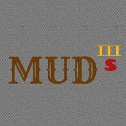
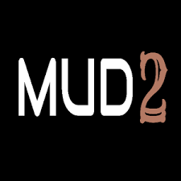

MUD 3 - Supremacy
It'll be pointless and much much more tiring to start from scratch and build Mud 3. Instead, the Project files of Mud 2 will be used and modified. The Characters will be redesigned, current game modes will be made better with more new game modes to be added.
It'll be pointless and much much more tiring to start from scratch and build Mud 3. Instead, the Project files of Mud 2 will be used and modified. The Characters will be redesigned, current game modes will be made better with more new game modes to be added.
It'll be pointless and much much more tiring to start from scratch and build Mud 3. Instead, the Project files of Mud 2 will be used and modified. The Characters will be redesigned, current game modes will be made better with more new game modes to be added.
Improvements in Airplane modes and their design will be made (planes will look much better and landscape while flying will be better), Third Person Character (TPC) Game Modes will feature Ethan from the original Mud, along with Sara and Ben, Vehicles will be improved, new ones will be added and speedometers will be remade, new worlds will be added and the ones in Mud 2 made better, Joystick(s) will be used for character movement as asked and new generation of levels will be crafted featuring open-world interactive worlds filled with AIs and missions. Mud 3S levels' loading times will be considerably reduced and there'll be a wider range of devices to support the game. The user interface (UI) as well will be redesigned along with the in-game menus.
Improvements in Airplane modes and their design will be made (planes will look much better and landscape while flying will be better), Third Person Character (TPC) Game Modes will feature Ethan from the original Mud, along with Sara and Ben, Vehicles will be improved, new ones will be added and speedometers will be remade, new worlds will be added and the ones in Mud 2 made better, Joystick(s) will be used for character movement as asked and new generation of levels will be crafted featuring open-world interactiveworlds filled with AIs and missions. Mud 3S levels' loading times will be considerably reduced and there'll bea wider range of devices to support the game. The user interface (UI) as well will be redesigned along with the in-game menus.
In the new gen2 worlds, there will be
missions, quests, AIs, interactive vehicles and environments (shops, houses, buildings), car upgrades
(and customization if possible), drones, character specific abilities, new particle systems and way more things
filled with big doses of animation and better graphics. The first version will be out on the 4th June 2020
(for the 4 year anniversary of Mud) and after its release, Mud 3S will be constantly updated with more features,
more things to do in gen2 worlds, more in-game objects and new environments (both gen1 and gen2).
So, what do you think about everything that will be featured and improved in Mud 3S ?
(If you want something to be added in Mud 3S or have any query please get into contact with me and I
shall get to you as soon as possible).
MUD 2
Mud 2 is an open world game where everyone does what he/she wants.
There are numerous game modes featuring different types of cars, airplanes and characters. There are many
cities for you to explore and have fun. Many new Game modes and new exciting cities will be continuously added.
You can fly, shoot and do many more things in Mud 2. There are also special levels that feature stuff like
a giant periodic table with images of the elements or a football stadium. Later on there will be a Multiplayer Mode.
It should be noted that some cities in Mud 2 may not play well on lower-end devices.If your phone is not
powerful enough, you may experience lag in some cities(NOT ALL).
Mud 2 is an open world game where everyone does what he/she wants.
There are numerous game modes featuring different types of cars, airplanes and characters. There are many
cities for you to explore and have fun. Many new Game modes and new exciting cities will be continuously added.
You can fly, shoot and do many more things in Mud 2. There are also special levels that feature stuff like
a giant periodic table with images of the elements or a football stadium. Later on there will be a Multiplayer Mode.
It should be noted that some cities in Mud 2 may not play well on lower-end devices.If your phone is not
powerful enough, you may experience lag in some cities(NOT ALL).
Mud 2 is an open world game where everyone does what he/she wants.
There are numerous game modes featuring different types of cars, airplanes and characters. There are many
cities for you to explore and have fun. Many new Game modes and new exciting cities will be continuously added.
You can fly, shoot and do many more things in Mud 2. There are also special levels that feature stuff like
a giant periodic table with images of the elements or a football stadium. Later on there will be a Multiplayer Mode.
It should be noted that some cities in Mud 2 may not play well on lower-end devices.If your phone is not
powerful enough, you may experience lag in some cities(NOT ALL).
Click here to Download the Original Mud
Click here to Download Mud 2
Click here to Download the Original Mud
Click here to Download Mud 2
Finally Mud 2 is released. First of all, I would like to apologize to everyone who had played the original Mud and who faced all the issues. Everything is fixed now. The Menus have been re-designed, the buttons and text elements have been made bigger, new Soundtracks from NCS have been added in all the game modes and menus. To overcome the issues due to lag, the worlds/cities have been broken down in even smaller worlds/cities. Due to this change, the game Graphics has been improved. Also, more worlds/cities have been added. Now coming to the fixes in the game modes:
That's all for Mud 2. If you wish to create games along with me or have talents that can be used in making Video Games like drawing, programming or designing, you may contact me. Please also let me know of bugs in Mud 2 and possible improvements/addition to the game. And lastly, a big Thank you to everyone who contributed in a way or the other to this game.
That's all for Mud 2. If you wish to create games along with me or have talents that can be used in making Video Games like drawing, programming or designing, you may contact me. Please also let me know of bugs in Mud 2 and possible improvements/addition to the game. And lastly, a big Thank you to everyone who contributed in a way or the other to this game.
That's all for Mud 2. If you wish to create games along with me or have talents that can be used in making Video Games like drawing, programming or designing, you may contact me. Please also let me know of bugs in Mud 2 and possible improvements/addition to the game. And lastly, a big Thank you to everyone who contributed in a way or the other to this game.